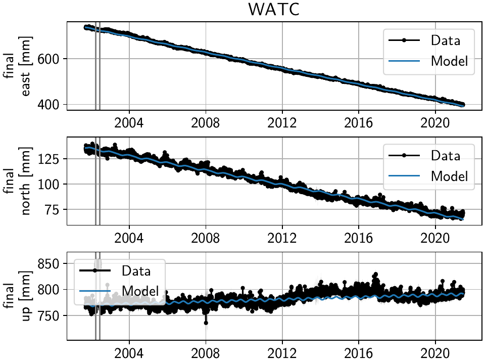
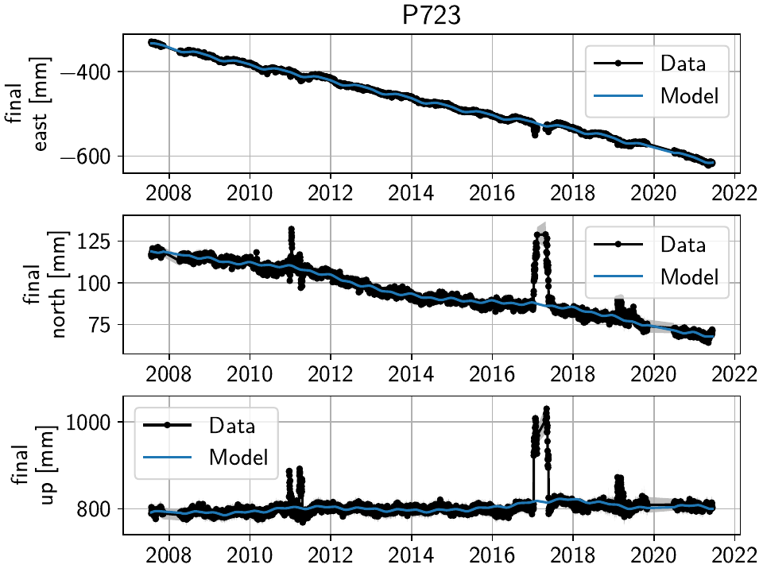
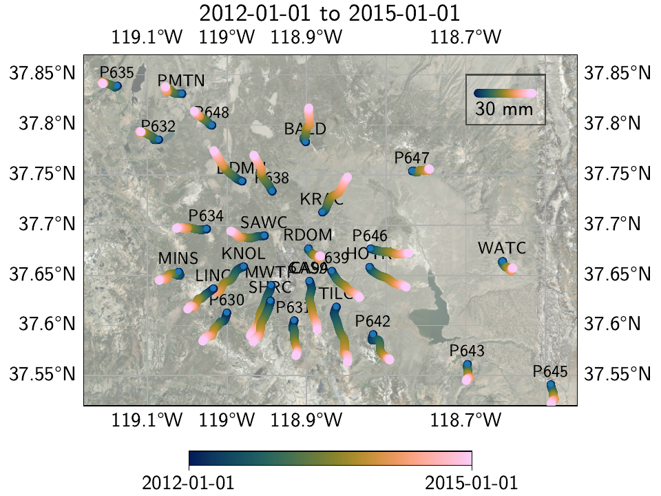
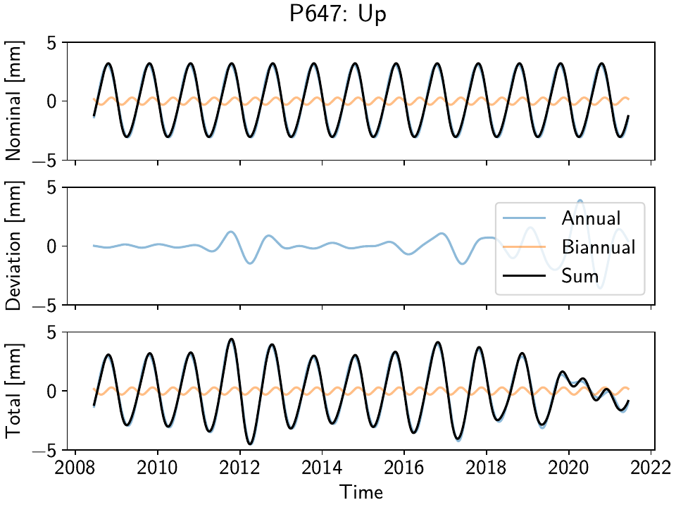

Example 1: Long Valley Caldera Transient Motions
The Long Valley Caldera region in California is a good example to show the capabilities of DISSTANS of separating different signals from geodetic timeseries. Most prominently, it exhibits transient motions associated with magmatic activity, and includes sometimes large seasonal signals due to hydrological loading. Because of the geophysical interest, it has been monitored with GNSS since the late 1990s. Additionally, there are extensive catalogues detailing possible steps in the timeseries that arise due to equipment changes or earthquakes, even though they appear to be incomplete as we will see later. Today, the data is for example accessible through the University of Nevada at Reno’s Nevada Geodetic Laboratory.
Note
While the table of contents might suggest that this process is sequential, each of the steps should be seen as an individual step that can be repeated at different times. For example, if we first clean the timeseries to the best of our abilities and then perform a fit, that fit might not be the best one. Using the fit to get a better understanding of our noise, and how to model signals, can in turn motivate another cleaning and fitting step.
Preparations
Here are the imports we will need throughout the example:
>>> import os
>>> import pickle
>>> import gzip
>>> import numpy as np
>>> import pandas as pd
>>> import matplotlib.pyplot as plt
>>> from pathlib import Path
>>> from scipy.linalg import lstsq
>>> from matplotlib.lines import Line2D
>>> import disstans
>>> from disstans.tools import tvec_to_numpycol, full_cov_mat_to_columns
We will also need two folders, one parent one, and one where the individual timeseries files will be downloaded into:
>>> # change these paths according to your system
>>> main_dir = Path("proj_dir").resolve()
>>> data_dir = main_dir / "data/gnss"
>>> gnss_dir = data_dir / "longvalley"
>>> plot_dir = main_dir / "out/example_1"
Note
It is recommended that you use an absolute path for main_dir since this path will
be part of the internal database we keep of the downloaded files, and executing this
example code then in a different folder will break the relative links.
(In my test system, proj_dir is a symbolic link.)
To use multiple threads, we use the same code as in Tutorial 3 (see there for changes you might need to make on your own machine):
>>> os.environ['OMP_NUM_THREADS'] = '1'
>>> disstans.defaults["general"]["num_threads"] = 30
Getting data
DISSTANS includes the download_unr_data() function to automatically
download timeseries files from the UNR servers, the
UNRTimeseries class to load the files, and the
parse_unr_steps() function to parse the steps file.
Feel free to check out their documentation for options used or not used here.
To download the timeseries, we first define the region of interest as a circle:
>>> center_lon = -118.884167 # [°]
>>> center_lat = 37.716667 # [°]
>>> radius = 100 # [km]
>>> station_bbox = [center_lon, center_lat, radius]
We now download the data into the data directory, only using stations that have a minimum number of observations:
>>> stations_df = disstans.tools.download_unr_data(station_bbox, gnss_dir,
... min_solutions=600, verbose=2)
Making sure ...
Downloading station list ...
List of stations to download: ...
...
In the following, we need the dataframe returned by the download function. The next time, we can therefore either run the same function again (which updates our local copy of the data in the process), or if this would take too long each time, we can just save the dataframe now, and load it the next time we use the data:
>>> # save
>>> stations_df.to_pickle(f"{gnss_dir}/downloaded.pkl.gz")
>>> # load
>>> stations_df = pd.read_pickle(f"{gnss_dir}/downloaded.pkl.gz")
Building the network
First off, we instantiate a Network object:
>>> net = disstans.Network("LVC")
We now use the station_df dataframe to loop over the paths of the downloaded files,
get the name and location of the stations, create
UNRTimeseries objects, and if they meet some quality
thresholds (see reliability and
length), we create a
Station object, add the timeseries, and then add it to the network:
>>> for _, row in stations_df.iterrows():
... # get name and location of station
... name = row["Sta"]
... loc = [row["Lat(deg)"], row["Long(deg)"], row["Hgt(m)"]]
... # make a timeseries object to check availability metric
... tspath = f"{gnss_dir}/{name}.tenv3"
... loaded_ts = disstans.timeseries.UNRTimeseries(tspath)
... # make a station and add the timeseries only if two quality metrics are met
... if (loaded_ts.reliability > 0.5) and (loaded_ts.length > pd.Timedelta(365, "D")):
... net[name] = disstans.Station(name, loc)
... net[name]["raw"] = loaded_ts
We can now use gui() to have a first look at the data
that was downloaded:
>>> net.gui(station="CASA", gui_kw_args={"wmts_show": True, "wmts_alpha": 0.5})

Just clicking through the stations, a couple of things are relevant for us going forward:
The stations get denser spaced towards the center of the Long Valley Caldera, which will help to isolate the smaller-scale transient motions.
West of the Sierra Nevada mountain range, the stations are less densely spaced, and are strongly affected by seasonal signals.
Only a few stations have been operational since before the year 2000.
There is significant measurement noise all around, but some stations specifically (e.g. P628, P723) also exhibit unphysical behavior in the winter times, possible related to snowfall.
Cleaning the timeseries
In this step, we want to make sure that we will not use data with either a high noise floor, or exhibiting behavior that we do not want to (or are not able) to model properly. Both conditions would deteriorate our solution process later on, and while in general, singular bad fits at individual stations can just be ignored afterwards, the fact that we want to use a spatially-coherent solver, means that extremely bad fits at one station can affect other stations as well.
Outlier and CME removal
Outlier removal is done with the clean() function using the raw
timeseries and a reference timeseries, accessed as a one-liner through
call_func_no_return().
The reference timeseries is created similarly using median() and
call_func_ts_return().
The residual, which is needed for the Common Mode Error estimation, is quickly computed
at all stations with math().
>>> # compute reference
>>> net.call_func_ts_return("median", ts_in="raw", ts_out="raw_filt", kernel_size=7)
>>> # remove outliers
>>> net.call_func_no_return("clean", ts_in="raw", reference="raw_filt", ts_out="raw_clean")
>>> # get the residual for each station
>>> net.math("raw_filt_res", "raw_clean", "-", "raw_filt")
>>> # remove obsolete timeseries
>>> net.remove_timeseries("raw_filt")
Now, similar to Tutorial 3, we estimate and remove the Common Mode Error:
>>> # calculate common mode
>>> net.call_netwide_func("decompose", ts_in="raw_filt_res", ts_out="common", method="ica")
>>> # now remove the common mode, call it the "intermed" timeseries,
>>> for station in net:
... station.add_timeseries("intermed", station["raw_clean"] - station["common"],
... override_data_cols=station["raw"].data_cols)
>>> # remove obsolete timeseries
>>> net.remove_timeseries("common", "raw_clean")
>>> # clean again
>>> net.call_func_ts_return("median", ts_in="intermed",
... ts_out="intermed_filt", kernel_size=7)
>>> net.call_func_no_return("clean", ts_in="intermed",
... reference="intermed_filt", ts_out="final")
>>> net.remove_timeseries("intermed", "intermed_filt")
Finally, we assume that the cleaned timeseries has the same measurement uncertainties than the original one, so we copy it over:
>>> net.copy_uncertainties(origin_ts="raw", target_ts="final")
First pass: major steps and noisy periods
Now that we have a cleaner timeseries to start from, we will try to identify as many steps in the timeseries as possible, with the least amount of user interaction. In order to do that, we first have to estimate and remove the dominant signals in the timeseries: the seasonal (sinusoid) and secular (linear plate motion) components.
This means we have to add models to the 'final' timeseries at all stations.
In the Tutorials, this was done individually for each station using
a loop and explicitly instantiating Model objects, and then
adding them to the stations using add_local_model_dict().
This was both desired to illustrate the object-based nature of DISSTANS, as well as
necessary since we needed direct access to the model objects anyway to read in
parameters and then evaluate the models to create synthetic timeseries.
Here, the models we’re using will change throughout the examples, and we don’t need
explicit access to the individual fitted parameters anytime soon, so we can skip all
of the work and instead just define the models using keyword dictionaries, taking
advantage of the add_local_models() that will do all
of the instantiating and assigning for us:
>>> models = {"Annual": {"type": "Sinusoid",
... "kw_args": {"period": 365.25,
... "t_reference": "2000-01-01"}},
... "Biannual": {"type": "Sinusoid",
... "kw_args": {"period": 365.25/2,
... "t_reference": "2000-01-01"}},
... "Linear": {"type": "Polynomial",
... "kw_args": {"order": 1,
... "t_reference": "2000-01-01",
... "time_unit": "Y"}}}
>>> net.add_local_models(models=models, ts_description="final")
Now that we have added the models, we can perform the first model fitting
using basic linear least squares (linear_regression())
in parallel through the fitevalres() method:
>>> net.fitevalres("final", solver="linear_regression",
... use_data_covariance=False, output_description="model_noreg",
... residual_description="resid_noreg")
We ignore the data covariance in this very first step for computation time
considerations. Again, we can use the gui()
method to have a look at the result (both the fit and the residuals).
By removing the major signals modeled, obvious transients and steps become significantly more obvious - both for the human eye as well as any automated step detector. In a fully manual framework, we would now click through the stations one by one and writing down the dates on which to add steps that need to be estimated and removed before we’re able to accurately estimate transients and smaller-magnitude events.
DISSTANS provides a simple step detector to avoid having to look at all stations and
all timespans, which instead tries to look for potential steps, and sorts them by
probability and station, such that the user can start from the most likely ones,
and then work their way down until all obvious steps (at least in this first stage)
are found. The included StepDetector class is a simple
and imperfect one, but even more complicated ones (e.g. see [gazeaux13] for an
overview of manual and automated methods) fall short of human-in-the-loop techniques.
The class should therefore be viewed as only an aid to the user.
Let’s run it on the residual timeseries (see the method documentation for how it works and keyword descriptions):
>>> stepdet = disstans.processing.StepDetector(kernel_size=61, kernel_size_min=21)
>>> step_table, _ = stepdet.search_network(net, "resid_noreg")
There are two ways of inspecting the outputs now. First, we can of course just print the results:
>>> print(step_table)
station time probability var0 var1 varred
2803 TILC 2008-07-27 432.592147 16398.517922 13.140219 0.999199
554 LINC 1998-09-15 407.113500 433129.225394 6.736510 0.999984
323 DOND 2016-04-20 226.227819 469.133121 11.074441 0.976394
2828 WATC 2002-06-18 214.896877 414.423305 11.779896 0.971575
2826 WATC 2002-04-04 194.728898 421.507356 16.675928 0.960437
... ... ... ... ... ... ...
1254 P627 2007-12-17 20.007536 1.051037 0.729199 0.306210
114 CA99 2008-11-04 20.005889 16.810578 11.663321 0.306192
1085 P311 2011-05-25 20.002984 15.671794 10.873741 0.306159
2238 P650 2010-04-13 20.002579 1.763096 1.223317 0.306154
524 KRAC 2010-03-17 20.001845 26.343070 18.278256 0.306146
[2883 rows x 6 columns]
To get an intuition what those numbers translate to in the timeseries, we can use
the second method: using the gui() with the
mark_events keyword option. If we supply it the entire table we just computed,
we will see that the low probabilities are most likely false detections:
>>> net.gui(timeseries="final", mark_events=step_table)
So instead, for a first look at the major steps that we will need to model, let’s restrict ourselves to a subset of the table where the variance reduction is more than 90%:
>>> step_table_above90 = step_table[step_table["varred"] > 0.9]
>>> print(step_table_above90)
station time probability var0 var1 varred
2803 TILC 2008-07-27 432.592147 16398.517922 13.140219 0.999199
554 LINC 1998-09-15 407.113500 433129.225394 6.736510 0.999984
323 DOND 2016-04-20 226.227819 469.133121 11.074441 0.976394
2828 WATC 2002-06-18 214.896877 414.423305 11.779896 0.971575
2826 WATC 2002-04-04 194.728898 421.507356 16.675928 0.960437
1367 P628 2017-01-08 168.021602 1902.333674 116.604770 0.938704
1368 P628 2017-01-09 151.188220 1871.194656 151.145501 0.919225
1642 P636 2011-09-15 145.406735 645.981933 57.366504 0.911195
1383 P628 2019-04-28 144.924585 1412.259909 126.411142 0.910490
>>> net.gui(timeseries="final", mark_events=step_table_above90)
The stations have two different behaviors. The first, simpler one, is just that of an unmodeled step, e.g. at station TILC:
Similar behavior can be found for LINC and DOND:


Note
In general, the first thing to check with steps like these is to make sure they aren’t related to a maintenance or earthquake event, which can be inferred from publicly available catalogs. In these cases here, they are neither, and so we will defer the part where we load those catalogs to improve our understanding of where to put modeled steps to the next section.
Keep in mind that other data providers (e.g. UNAVCO) might have different position timeseries for the same stations, and come with different site logs that might be more complete.
We can add specific steps to those dates as follows:
>>> net["TILC"].add_local_model(ts_description="final",
... model_description="Unknown",
... model=disstans.models.Step(["2008-07-26"]))
>>> net["DOND"].add_local_model(ts_description="final",
... model_description="Unknown",
... model=disstans.models.Step(["2016-04-20"]))
>>> net["LINC"]["final"].cut(t_min="1998-09-13", keep_inside=True)
Note that here, we’ve just removed the little bit of early data at LINC instead of adding a step, because we don’t expect the early data to significantly improve our model inversion as a whole.
Slightly different is WATC with a clear offset, but then also returning to its previous value:
Where we can add the two steps as follows
>>> net["WATC"].add_local_model(ts_description="final",
... model_description="Unknown",
... model=disstans.models.Step(["2002-04-04", "2002-06-18"]))
P628 and P636 exhibit a different behavior: Here, we can see that the identified steps are related to transient motion. At P628 we can guess that this appears seasonally, so snow cover on the antennas (also given that the outliers are most strongly present in the Up component) is one reasonable explanation.


In our framework, we would think of this as noise, since it is not related
to any tectonic process. For P636, the most straightforward way to
avoid this noise affecting our fitting process is to eliminate the single
timespan this appears - towards the end of 2011. This is easily
done with the cut() method:
>>> net["P636"]["final"].cut(t_min="2011-08-03", t_max="2011-09-14", keep_inside=False)
For P628, the noise is so strong that it affects the seasonal motion estimate, and appears both pre-2012 as well as post-2017. We can either define multiple timespans and mask out the data as we can do with P636, or discard the entire timeseries (as published studies usually do). While the former might be more desirable in an ideal world, we do not know how big the influence still is during the seasons where the noise is less apparent, so for this example, we will also go with simply discarding the entire timeseries:
>>> del net["P628"]["final"]
This is of course manual work - one way to reduce the number of lines of code would be to determine a threshold by visual inspection (like the 90% variance reduction from above) and then add steps to all the stations and times in the table. However, this will lead to problems if we have cases like P636 and P628, where adding a step would be wrong.
After adding those major steps and removing noisy parts of the data, we are almost ready
to fit the models again. However, by clicking through the stations (and potentially
aided by the GUI’s rms_on_map option), we see that there are sometimes significant
longterm transients that aren’t captured by the purely linear and sinusoid models.
To estimate the major trends as well (again to allow for a better step detecting process),
we add some longterm, unregularized spline models:
>>> longterm_transient_mdl = \
... {"Longterm": {"type": "SplineSet",
... "kw_args": {"degree": 2,
... "t_center_start": net["CASA"]["final"].time.min(),
... "t_center_end": net["CA99"]["final"].time.max(),
... "list_num_knots": [5, 9]}}}
>>> net.add_local_models(models=longterm_transient_mdl, ts_description="final")
Where we know that CASA has the earliest observation, and CA99 (as well as many other stations) are active today and so will have the latest observation timestamp. (See Tutorial 2 for an introduction to splines in DISSTANS.)
Now, let’s fit again:
>>> net.fitevalres("final", solver="linear_regression",
... use_data_covariance=False, output_description="model_noreg_2",
... residual_description="resid_noreg_2")
Before we open the GUI again to see the fitted models, we want to have a quantitative understanding of how large the residuals are by looking at their root-mean-square (RMS):
>>> resids_df = net.analyze_residuals("resid_noreg_2", rms=True)
>>> resids_df["total"] = np.linalg.norm(resids_df.values, axis=1)
>>> resids_df.sort_values("total", inplace=True, ascending=False)
The default output is by component, so we took the vector norm of all components for each station, and then sort the stations according to that. The first five entries are now:
>>> resids_df["total"].head()
Station
P723 19.298688
CASA 13.519355
MUSB 11.264231
KNOL 9.993418
JNPR 9.973603
Name: total, dtype: float64
Let’s open the GUI again, looking at these values on the map directly, and inspecting the timeseries of those top-5 worst residuals, to identify any stations that are still not being well fit by the models, and where we would need to either remove parts, or add steps:
>>> net.gui(timeseries="final", rms_on_map={"ts": "resid_noreg_2"})
P723 is a clear example of big, again probably snow-related events. We can either discard the entire timeseries, or remove the noisy periods as before.
MUSB and KNOL show similar behavior as well, but on a much smaller scale:


We’ll remove those periods just as above (of course, one could write a nice loop for that, especially if it were a larger network):
>>> net["P723"]["final"].cut(t_min="2010-12-18", t_max="2011-04-18", keep_inside=False)
>>> net["P723"]["final"].cut(t_min="2017-01-09", t_max="2017-05-24", keep_inside=False)
>>> net["P723"]["final"].cut(t_min="2019-02-02", t_max="2019-04-02", keep_inside=False)
>>> net["P723"]["final"].cut(t_min="2019-12-02", t_max="2020-04-02", keep_inside=False)
>>> net["MUSB"]["final"].cut(t_min="1998-02-15", t_max="1998-04-19", keep_inside=False)
>>> net["KNOL"]["final"].cut(t_min="2017-01-22", t_max="2017-03-16", keep_inside=False)
The other two stations show us that we’ve cleaned the data enough to move forward with the actual estimation. At CASA, we now see that the most prominent signal is now a fast transient that contributes to the currently still bad residual, and at JNPR, we see some outliers, but no strong, coherent periods of noise offsets like before.

Note
CASA is at the exact same location as CA99 - on the map, they therefore appear on top
of each other, and it’s impossible to select CASA by clicking on it. We can use
the GUI’s station keyword though to pre-select a station.
Finally, just like we had the case of LINC earlier where there was a little bit of data and a gap at the very beginning of our timeseries, we can see with the GUI that a couple of other stations have these early gaps after noisy data as well. Let’s remove them so that they don’t unnecessarily confuse the rest of the model inversion (alternatively, we could include a Step model to fit the potential offset that is there):
>>> net["MINS"]["final"].cut(t_min="1997-06-01", keep_inside=True)
>>> net["MWTP"]["final"].cut(t_min="1999-01-01", keep_inside=True)
>>> net["KNOL"]["final"].cut(t_min="1999-01-01", keep_inside=True)
>>> net["RDOM"]["final"].cut(t_min="1999-09-01", keep_inside=True)
>>> net["SHRC"]["final"].cut(t_min="2006-03-01", keep_inside=True)
Second pass: minor, catalog-based steps
After removing major steps and noisy periods in the previous section, we will now do one last unregularized fit to the data, which we will use to look for minor steps, this time aided by UNR’s step file.
>>> net.fitevalres("final", solver="linear_regression",
... use_data_covariance=False, output_description="model_noreg_3",
... residual_description="resid_noreg_3")
We perform the regular step detection like above with the new residual timeseries:
>>> step_table, _ = stepdet.search_network(net, "resid_noreg_3")
And then we use the parse_unr_steps() function to download
(if check_update=True) or load (if already present) the catalog, parsing it into
two separate tables - one for the maintenance events, and one for potential earthquake events:
>>> unr_maint_table, _, unr_eq_table, _ = \
... disstans.tools.parse_unr_steps(f"{data_dir}/unr_steps.txt",
... verbose=True, check_update=False,
... only_stations=net.station_names)
...
Maintenance descriptions:
...
Number of Maintenance Events: ...
Number of Earthquake-related Events: ...
Then, we use the step detector object’s
search_catalog() method to specifically test
the dates where events where recorded:
>>> maint_table, _ = stepdet.search_catalog(net, "resid_noreg_3", unr_maint_table)
>>> eq_table, _ = stepdet.search_catalog(net, "resid_noreg_3", unr_eq_table)
(Of course, those dates will already have been checked by the general call to
search_network(), but if the step detector does
not see evidence for a step there given its input parameters, the probability of a
step being present at that date will not be included in the output table.)
The questions we want to answer now are:
Are there still large, unmodeled steps that are not included in the maintenance or earthquake records?
Down to what probability (or variance reduction percentage) should we automatically add entries in the records file to our stations? (Those can also differ between maintenance and earthquakes.)
To answer the first question, we can merge the dataframes, and drop the rows station-date pairs that are present in both:
>>> # merge the two catalog tables
>>> maint_or_eq = pd.merge(maint_table[["station", "time"]],
... eq_table[["station", "time"]], how="outer")
>>> # merge with step_table
>>> merged_table = step_table.merge(maint_or_eq, on=["station", "time"], how="left",
... indicator="merged")
>>> # drop rows where the indicators are not only in step_table
>>> unknown_table = merged_table. \
... drop(merged_table[merged_table["merged"] != "left_only"].index)
The station-time pairs that will be dropped are therefore those in
merged_table[merged_table["merged"] != "left_only"], which are:
>>> print(merged_table[merged_table["merged"] != "left_only"])
station time probability var0 var1 varred merged
3 P469 2019-07-06 89.232324 2.665930 0.594600 0.776963 both
13 P652 2020-05-15 63.770193 1.314950 0.445210 0.661424 both
27 P627 2020-05-15 57.036696 2.352315 0.889388 0.621910 both
42 P726 2019-07-06 51.874552 1.888100 0.776914 0.588521 both
123 P627 2020-10-13 42.560855 16.570964 7.943382 0.520645 both
217 P652 2019-07-06 37.581517 1.104752 0.574610 0.479874 both
596 P651 2020-05-15 30.160953 1.543170 0.906470 0.412592 both
762 P653 2019-07-06 28.413357 0.996481 0.602353 0.395520 both
879 P650 2020-05-15 27.262764 0.880887 0.542617 0.384010 both
1946 P311 2019-07-06 22.124524 0.447579 0.299934 0.329875 both
2703 P651 2019-07-06 20.063574 0.941452 0.652570 0.306847 both
So only a couple of entries in our step_table have an easy explanation, leaving the entries
in unknown_table either as false detections, or steps with unknown causes.
Because there are too many events in all three tables now to look at all of them individually (already for this relatively small network), we need to start making some thresholding choices, and add steps wherever the probability of a step is larger than that. Because we have more confidence in steps recorded in one of the catalogs than the ones only detected by the automatic step detector, that threshold can be chosen differently. Here is where “geophysical intuition” now has to come into play, and we have to accept that there are going to be false negatives and false positives.
To compare the catalogs quantitatively, we can plot how the probabilities of steps are distributed within them:
>>> plt.plot(np.arange(unknown_table.shape[0])/unknown_table.shape[0],
... unknown_table["probability"].values, label="Unknown")
>>> plt.plot(np.arange(maint_table.shape[0]) /
... np.isfinite(maint_table["probability"].values).sum(),
... maint_table["probability"].values, label="Maintenance")
>>> plt.plot(np.arange(eq_table.shape[0]) /
... np.isfinite(eq_table["probability"].values).sum(),
... eq_table["probability"].values, label="Earthquake")
>>> plt.ylabel("Probability")
>>> plt.xlabel("Normalized number of events")
>>> plt.xticks(ticks=[], labels=[])
>>> plt.legend()
>>> plt.show()
We can see nice L-shaped curves for all three catalogs, but with different probabilities at their inflection points. As a first guess of our thresholds, we can e.g. choose 50 for the Unknown catalog, and 15 for the other two. The reason we choose a probability above the turning point for the Unknown catalog is that we want to minimize the impact of falsely adding a step where none is there, but for the other two, where we know something could have happened, we can pick the probability closer or even below the turning point.
To check our guess, we can use the GUI again, marking all earthquake steps above 10:
>>> net.gui(timeseries="final", rms_on_map={"ts": "resid_noreg_3"},
... mark_events=eq_table[eq_table["probability"] > 10])
By clicking through the stations, we can see that 15 is a decent threshold. Some steps that are below 15 should maybe be added, and some above 15 shouldn’t be, but this is probably the best we can do in an automated way. We can proceed similarly for the maintenance steps, and 15 also works well.
We can now use a loop now to add the model steps automatically:
>>> eq_steps_dict = dict(eq_table[eq_table["probability"] > 15]
... .groupby("station")["time"].unique().apply(list))
>>> for stat, steptimes in eq_steps_dict.items():
... net[stat].add_local_model_kwargs(
... ts_description="final",
... model_kw_args={"Earthquake": {"type": "Step",
... "kw_args": {"steptimes": steptimes}}})
>>> maint_steps_dict = dict(maint_table[maint_table["probability"] > 15]
... .groupby("station")["time"].unique().apply(list))
>>> for stat, steptimes in maint_steps_dict.items():
... net[stat].add_local_model_kwargs(
... ts_description="final",
... model_kw_args={"Maintenance": {"type": "Step",
... "kw_args": {"steptimes": steptimes}}})
Finally, checking for the unknown steps, we observe that some of them are actually
just a day or two off from maintenance steps which we will take care of, and most of
them, even above a probability of 60 or 70, are actually false or uncertain detections
we should probably skip. One exception is KRAC, where we have another step-and-reverse
event similar to the previous section. We could again just cut out the affected timespan,
but for purely example reasons, we’re instead going to add a model that will estimate
this temporary offset. We craft this particular model with a constant
Polynomial with a set start and end date, and setting it to zero
outside it’s active period. (We could also use a Step model with
an end date, or write a new Model class entirely.)
>>> net["KRAC"].add_local_model_kwargs(
... ts_description="final",
... model_kw_args={"Offset": {"type": "Polynomial",
... "kw_args": {"order": 0,
... "t_start": "2002-02-17",
... "t_reference": "2002-02-17",
... "t_end": "2002-03-17",
... "zero_before": True,
... "zero_after": True}}})
We could loop back now and do a fourth unregularized linear regression solution, checking again for too many or too few steps, which may be necessary for publication-grade fitting quality. For the purposes of this example, we will move on, however.
Model parameter estimation
Now we’re ready to do a full, spatially-coherent estimation of model parameters. For that, we first remove the unregularized long-term transient model we added in the previous section for a better step detection:
>>> for stat in net:
... stat.remove_local_models("final", "Longterm")
We now add two two types of models. First, a new Transient model with a larger range of timescales, that will be used to fit all the non-seasonal transient deformation. Second, we want to be able to capture variations in the amplitude and phase of the seasonal signal we’re estimating (since they vary significantly with the weather conditions, and would otherwise just contaminate our Transient model).
For the first model, we already know that we can use the SplineSet
class, just like we did above. For the second model, we use the
AmpPhModulatedSinusoid class, which doesn’t estimate a single
pair of amplitude and phase for the entire timespan, but models the time history of
amplitude and phase using a full B-Spline basis function set. We will regularize this
model as well, but keep it at the standard L1-regularization without any L0 sparsity
constraint, because we don’t expect the signal to be sparse in the first place, but want
to keep some sort of regularization to not make the fit explode. The number of bases,
as well as the total timespan, is set so that there is exactly one basis per year.
(It is sufficient to only have an deviation component for the annual frequency.)
>>> new_models = \
... {"Transient": {"type": "SplineSet",
... "kw_args": {"degree": 2,
... "t_center_start": net["CASA"]["final"].time.min(),
... "t_center_end": net["CA99"]["final"].time.max(),
... "list_num_knots": [int(1+2**n) for n in range(4, 8)]}},
... "AnnualDev": {"type": "AmpPhModulatedSinusoid",
... "kw_args": {"period": 365.25,
... "degree": 2,
... "num_bases": 29,
... "t_start": "1994-01-01",
... "t_end": "2022-01-01"}}}
>>> net.add_local_models(new_models, "final")
This time, we specify a reweighting function explicitly for the spatial solution:
>>> rw_func = disstans.solvers.InverseReweighting(eps=1e-5, scale=1e-3)
Finally, we can run the estimation. Note that we’re doing a couple of things:
We have a different penalty parameter for every component, based on the fact that the Up component is usually much noisier.
We do not include the seasonal deviation models in either
spatial_reweight_models(orcontinuous_reweight_models, not discussed here), which means that this model will be L1-regularized.We want to see the
extended_statsduring the fit, and save them in thestatsvariable.We save ourselves the follow-up calls to evaluate the model to get a fit, and to calculate the residual timeseries, by specifying
keep_mdl_res_as(becauseextended_statsalready has to calculate those anyway, but wouldn’t otherwise keep them).
>>> stats = net.spatialfit("final",
... penalty=[20, 20, 2],
... spatial_reweight_models=["Transient"],
... spatial_reweight_iters=20,
... local_reweight_func=rw_func,
... formal_covariance=True,
... use_data_covariance=True,
... verbose=True,
... extended_stats=True,
... keep_mdl_res_as=("model_srw", "resid_srw"))
Calculating scale lengths
Distance percentiles in km (5-50-95): [7.5, 41.6, 104.2]
Initial fit
...
Done
We again see from the verbose progress output how the spatial sparsity is
well enforced, and the solver converges.
For a (relatively) quick first fit, we can use use_data_covariance=False, but for a
final result, the data covariance should be taken into account.
If we want to save the state of the entire network object right now (such that we can load it later without having to re-run the fitting process), we can save it efficiently like this:
>>> with gzip.open(plot_dir / "example_1_net.pkl.gz", "wb") as f:
>>> pickle.dump(net, f)
We can load it again using:
>>> with gzip.open(plot_dir / "example_1_net.pkl.gz", "rb") as f:
>>> net = pickle.load(f)
Using the GUI, we can again get a first impression of the quality of the fit:
>>> net.gui(station="CASA",
... timeseries=["final", "resid_srw"],
... rms_on_map={"ts": "resid_srw"},
... scalogram_kw_args={"ts": "final", "model": "Transient", "cmaprange": 60})

{kind=link}
{kind=link}
{kind=link}
We can see that compared to the beginning of the example, where we had significant unfitted transient signal in the timeseries at CASA and elsewhere, our fit now nicely matches the trajectory (all the while respecting all the spatial signal that we have taken advantage of). The scalograms also confirm that a sparse solution has been found.
To plot only the transient model fitted to the timeseries, we can also use the GUI
method with the keyword arguments
sum_models=False, fit_list=["Transient"], gui_kw_args={"plot_sigmas": 0},
which makes the transient periods very obvious:

(We suppressed the plotting of the uncertainty since the formal variance for only a single model has limited interpretability.)
We can do the same to have a look at the joint seasonal models:
>>> net.gui(station="CASA", timeseries="final", sum_models=True,
... fit_list=["Annual", "AnnualDev", "Biannual"],
... gui_kw_args={"plot_sigmas": 0})
Giving us:

Even though in this plot it is somewhat hard to see, the seasonal signal has an amplitude that changes slightly based on the observations, just as desired.
To once again remind that there is always a trade-off between the transient spline signal and the other models, let’s have a look at the correlation matrix for the CASA station:
>>> net["CASA"].models["final"].plot_covariance(fname="example_1e_corr.png",
... plot_empty=False, use_corr_coef=True)
Modeled horizontal transient motion
We can also use the wormplot() method
(also see Tutorial 3)
to have a closer look at one of the transient periods at the center of the network:
>>> subset_stations = ["RDOM", "KRAC", "SAWC", "MWTP", "CASA", "CA99", "P639", "HOTK",
... "P646", "P638", "DDMN", "P634", "KNOL", "MINS", "LINC", "P630",
... "SHRC", "P631", "TILC", "P642", "BALD", "P648", "WATC", "P632",
... "P643", "P647", "PMTN", "P635", "P645"]
>>> plot_t_start, plot_t_end = "2012-01-01", "2015-01-01"
>>> net.wormplot(ts_description=("final", "Transient"),
... fname=plot_dir / "example_1f",
... save_kw_args={"format": fmt, "dpi": 300},
... fname_animation=plot_dir / "example_1f.mp4",
... t_min=plot_t_start, t_max=plot_t_end, scale=2e2,
... subset_stations=subset_stations,
... lat_min=37.52, lat_max=37.87, lon_min=-119.18, lon_max=-118.56,
... annotate_stations="small",
... colorbar_kw_args={"shrink": 0.5},
... legend_ref_dict={"location": [-118.685, 37.832],
... "length": 30,
... "label": "30 mm",
... "rect_args": [(-118.7, 37.8), 0.1, 0.05],
... "rect_kw_args": {"facecolor": [1, 1, 1, 0.15],
... "edgecolor": [0, 0, 0, 0.6]}})
Which yields the following map:
And animation:
This is a relatively long timespan, so we can nicely see individual periods of coherent motion of the network; the strongest one most notable being the radial outwards motion of the stations from the center of the caldera. If we only wanted to show individual slow slip events, we could identify the interesting periods from the timeseries, and then use multiple wormplots with shorter timespan.
There are two key reasons as to why our wormplot looks as smooth as it does.
Naturally, the right penalty parameter for the regularized models took some trial-and-error not
pictured in this example.
Just as important though is the fact that we added seasonal models that allowed variations of
the amplitude and phase from year to year - if we didn’t, every significant seasonal motion not
captured by the simple Sinusoid model would have been fitted by
our transient SplineSet model (given the appropriate regularization
penalty).
We can look at the same information in a different way: by projecting the horizontal motion onto the direction of maximum displacement, we can look at many timeseries at the same time in a frame that allows a direct comparison (code in the script file). The following figure shows the relative transient displacement for selected stations in the Long Valley Caldera. The station names are on the left, and the direction of maximum displacement is given on the right. (The time period used for the projection is 2012-2015.) The colored lines are the model fit, and the black dots are the residuals (centered on the transient model fit). The temporally coherent expansion is clearly visible:

Modeled vertical seasonal motion
We can also look at how the seasonal signal ends up being modeled by our time-varying-amplitude sinusoid (again, code in the script file). Here is just an example plot for the vertical component at station P647:
The nominal component in the top panel, the deviation in the middle panel, and the sum of the
two in the bottom panel. Clearly, the model adapts to yearly amplitude variations, and even
allows for shortterm phase changes. We can also have a look at the nominal vertical component
in map view using ampphaseplot():
Comparison of secular velocities
Finally, as the last “sanity check” that our models are correctly disentangling secular motion from other signals, let’s compare some of our estimated linear velocity vectors of the network stations with the published MIDAS velocities in [blewitt16] (everything in [m/a]):
Station |
This example |
MIDAS |
||||
East |
North |
Up |
East |
North |
Up |
|
P308 |
-0.022020 |
-0.002283 |
-0.000174 |
-0.022473 |
-0.002419 |
+0.000957 |
DOND |
-0.019113 |
-0.003761 |
+0.003988 |
-0.022462 |
-0.002837 |
+0.001112 |
KRAC |
-0.019325 |
-0.001209 |
+0.005940 |
-0.018233 |
-0.000377 |
+0.005676 |
CASA |
-0.022449 |
-0.007270 |
-0.001678 |
-0.022905 |
-0.007212 |
+0.003864 |
CA99 |
-0.023492 |
-0.004736 |
+0.003763 |
-0.023294 |
-0.006609 |
+0.004616 |
P724 |
-0.019636 |
-0.002419 |
-0.000284 |
-0.019328 |
-0.003772 |
+0.000314 |
P469 |
-0.017844 |
-0.006150 |
-0.000317 |
-0.017806 |
-0.006302 |
+0.000086 |
P627 |
-0.016661 |
-0.006193 |
-0.000305 |
-0.016974 |
-0.005181 |
-0.000166 |
In general, the two solutions are very similar, and differences might very well be because our processing is not fully automatic and might therefore provide better (or worse) fits than MIDAS. Again, a systematic comparison is beyond the scope of this example, but one crucial factor here is that the approaches to estimate the secular motion are fundamentally different. As we have seen above in the plot of the transient model fits at CASA, periods of rapid motion are embedded in periods of different, but slower transient motion. Some periods, even though they were fitted by our splines, look pretty linear. Naturally, there is a large ambiguity as to which period of slow and steady motion should be regarded as purely secular (if any at all). If we imposed, e.g., that the period between 1999 and 2001 should be purely secular, and the transient therefore should be zero, all we have to do is to increase our fitted linear model parameters, and remove that same linear trend from our transient estimate.
Final considerations
Let’s conclude with two remarks:
The choice of the hyperparameters (e.g. starting
penalty; the type andeps,scalevalues forspatialfit(); the number and timescales of the splines) are of course informed by me debugging and testing my code over and over again. Different dataset, and possibly different questions wanted to be solved, will likely warrant a systematic exploration of those. Thestatisticsreturn variable can be helpful to track the performance of different estimation hyperparameters.For the best model fit, additional cleaning (outlier removal) and common mode estimation steps might be useful.
References
Gazeaux, J., Williams, S., King, M., Bos, M., Dach, R., Deo, M., et al. (2013). Detecting offsets in GPS time series: First results from the detection of offsets in GPS experiment. Journal of Geophysical Research: Solid Earth, 118(5), 2397–2407. doi:10.1002/jgrb.50152